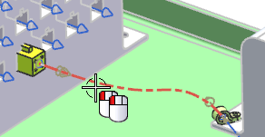
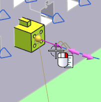
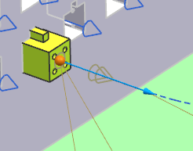
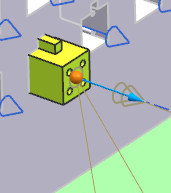

Double-click the segment.

Right-click the point on the connector end of the segment and choose Edit Extension.

In the Back Extension box, type 40.
回车。

Now the segment runs straight out of the connector for 40 mm before it begins to bend. Try a shorter extension length.
Type 20 for the Back Extension.

点击确定。